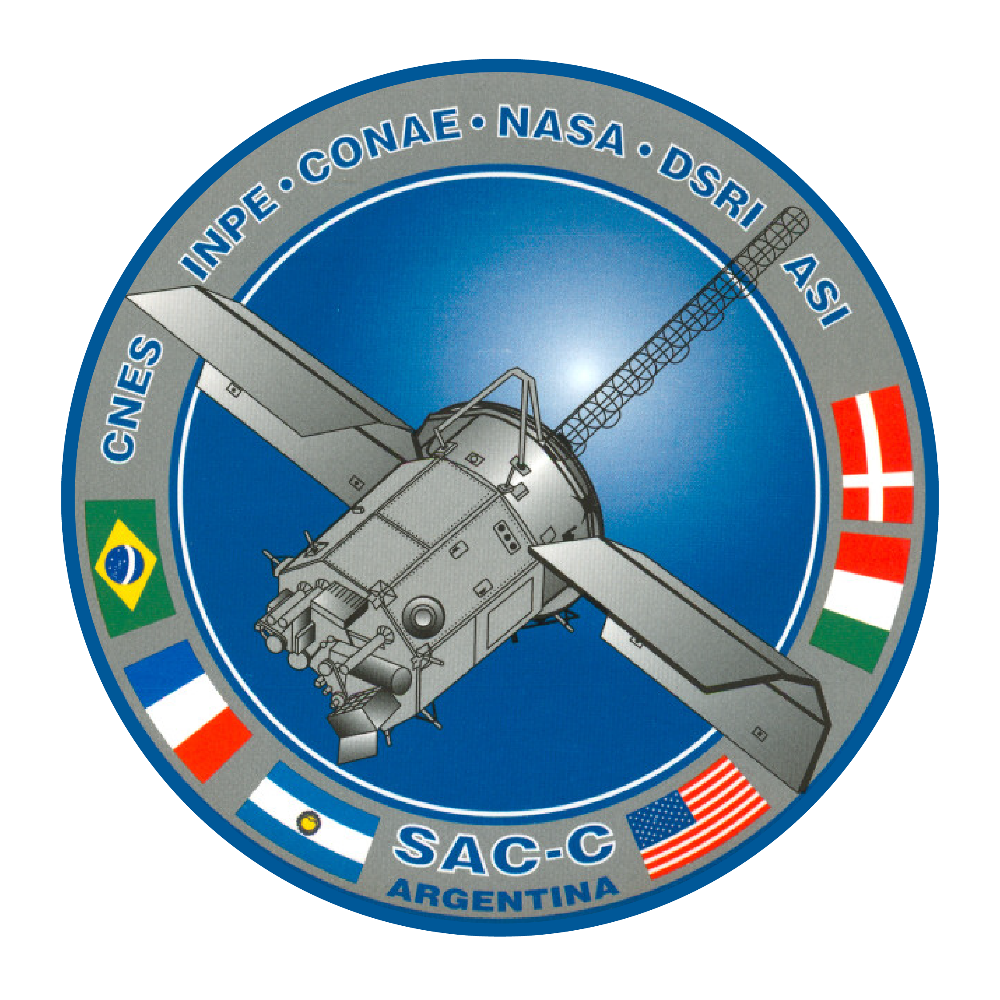

Trayectoria del Simulador NEP
Trayectoria NEP e Intersección con el Legado Nacional
Altitud del Vector: 0 km
Velocidad de Escape: 0.00 km/s
Empuje Iónico Continuo: 0.00 N
Núcleo Térmico HTS: 290 K
Archivo Histórico: Uniciencia Podcast
Divulgación oficial sobre los hitos aeroespaciales de la CNIE y CONAE.
"Si ustedes quieren aprender cohetería tienen que quemarse los dedos con pólvora..." Empezar desde cero, equivocándonos y volver hacer los cálculos otra vez, es la única vía llegar al espacio y consolidar desarrollos avanzados.
1969 (Apogeo: 82km)
1. El Origen: Ensayo de Pólvora y Mono Juan
Intersección con el Simulador: Al cruzar el espacio suborbital, recordamos los cimientos. Como estudiantes entendemos que antes de modelar campos iónicos complejos de Xenón, la Argentina consolidó la física balística y recuperación biológica elemental con el Rigel. Es nuestra raíz metodológica.
1998 (Altitud: 515km)
2. Estabilidad de Datos: Satélite SAC-A

Intersección con el Simulador: Tu vector entra en Órbita Baja (LEO). El código de control requiere verificar la estabilidad de paquetes de telemetría ópticos e instrumentación nativa en entornos espaciales reales, un escalón directo para los sistemas autónomos redundantes de tu planta NEP.
2000 (Altitud: 702km)
3. Resistencia a Radiación: Satélite SAC-C

Intersección con el Simulador: El flujo de radiación cósmica impacta el fuselaje en el plano heliosíncrono. Los datos históricos de degradación del SAC-C justifican y dan validez al cálculo del espesor de tu *Blindaje de Sombra Cónico* protector del reactor de fisión.
2011 (Altitud: 657km)
4. Gestión Térmica Activa: Misión SAC-D

Intersección con el Simulador: El núcleo HTS genera calor útil crítico en vacío profundo. El SAC-D (Aquarius) modeló sistemas avanzados de control térmico junto a la NASA; base directa para estructurar tus radiadores de bucle cerrado de gas noble bajo la ley de Stefan-Boltzmann.
2018 (Altitud: 620km eq.)
5. Gestión de Potencia: Constelación SAOCOM 1

Intersección con el Simulador: Para activar las bobinas iónicas del motor se requiere distribución masiva de energía. El radar SAR del SAOCOM demandó matrices energéticas complejas en el país, demostrando la necesidad de fuentes masivas continuas que solo un núcleo NEP puede proveer.
Presente (Escape Interplanetario)
6. Destino Final: SABIA-Mar & Misión Atenea

Intersección con el Simulador: Rompiendo la velocidad de escape (>11.2 km/s), confluyen tus ecuaciones de empuje y masa útil. Tu arquitectura de investigación espacial Atenea inicia viaje trans-orbital definitivo sustentada por el legado aeroespacial de la ciencia argentina.